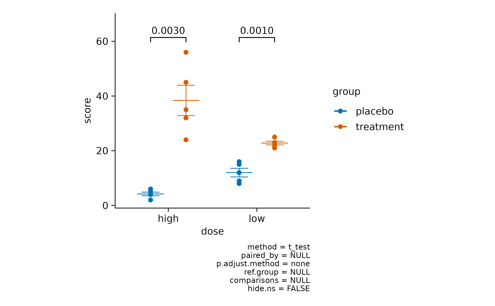
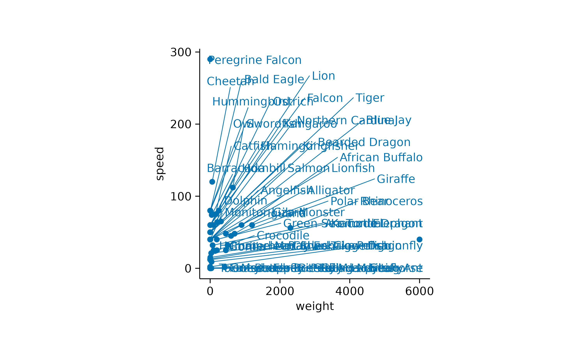
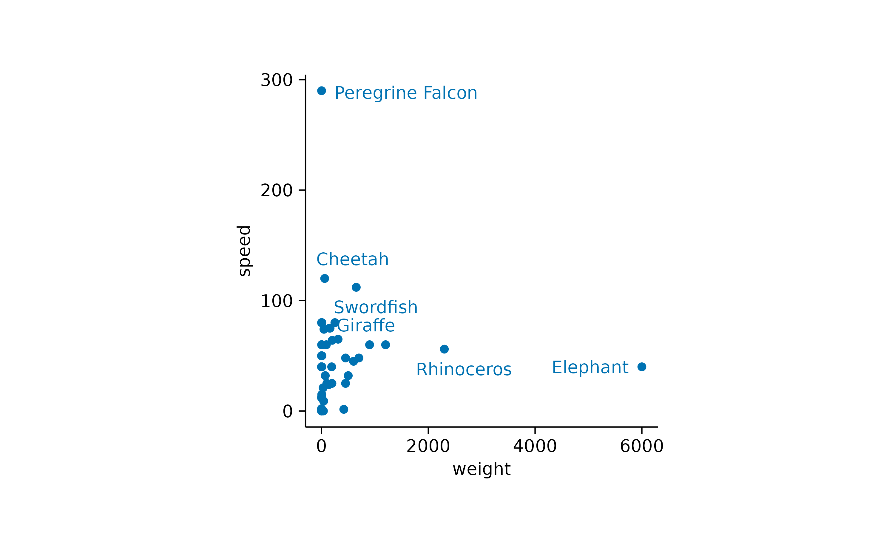

In this article, we will explore the visualization of different types of datasets using tidyplots. We will cover the plotting of raw data points, amounts, and heatmaps, as well as measures for central tendency, dispersion, and uncertainty. We will conclude by visualizing distributions and proportions, and adding statistical comparisons and annotations.
Data points
Plotting the raw data points is probably the most bare bone way to
visualize a dataset. The corresponding function in tidyplots is called
add_data_points().

In the above example some data points appear to overlap other points.
To account for this so called overplotting, you might want to
add a thin white border around the points. This is achieved by setting
the argument white_border = TRUE.
animals %>%
tidyplot(x = weight, y = size) %>%
add_data_points(white_border = TRUE)
Another way is to make the points transparent using the
alpha argument.
animals %>%
tidyplot(x = weight, y = size) %>%
add_data_points(alpha = 0.4)
Or to change the plotting symbol to an open shape.
animals %>%
tidyplot(x = weight, y = size) %>%
add_data_points(shape = 1)
However, data points can also be used to plot a discrete variable against a continuous variable.
study %>%
tidyplot(x = treatment, y = score) %>%
add_data_points()
To avoid overplotting in this scenario, there are two additional options. You can add some random noise to the y position, also known as jitter.
study %>%
tidyplot(x = treatment, y = score) %>%
add_data_points_jitter()
Alternatively, you can use an algorithm that keeps the points centered and just moves potentially overlapping points to the sides.
study %>%
tidyplot(x = treatment, y = score) %>%
add_data_points_beeswarm()
Amounts
For some datasets, it makes sense to count or
sum up data points in order to arrive to conclusions. As
one example, let’s have a look at the spendings
dataset.
spendings
#> # A tibble: 19 × 4
#> date title amount category
#> <date> <chr> <dbl> <chr>
#> 1 2023-10-01 Groceries 100 Food
#> 2 2023-10-01 Gasoline 40 Transportation
#> 3 2023-10-01 Rent 1200 Housing
#> 4 2023-10-02 Electricity 80 Utilities
#> 5 2023-10-03 School Supplies 75 Education
#> 6 2023-10-03 Health Insurance 200 Insurance
#> 7 2023-10-04 Dining Out 60 Food
#> 8 2023-10-04 Cell Phone Bill 50 Utilities
#> 9 2023-10-05 Groceries 90 Food
#> 10 2023-10-06 Gasoline 40 Transportation
#> 11 2023-10-07 Medical Checkup 150 Health
#> 12 2023-10-07 Dining Out 70 Food
#> 13 2023-10-08 Groceries 110 Food
#> 14 2023-10-08 Internet Bill 60 Utilities
#> 15 2023-10-09 Entertainment 30 Entertainment
#> 16 2023-10-10 Groceries 50 Food
#> 17 2023-10-12 Public Transport 70 Transportation
#> 18 2023-10-13 Dentist 90 Health
#> 19 2023-10-15 Car Insurance 40 InsuranceAs you can see, this dataset contains family spendings over a time period of 15 days in October. Here, it might be informative to see which spending categories are reoccurring and which are just one time spendings.
spendings %>%
tidyplot(x = category) %>%
add_count_bar()
One thing to note here is that the x axis labels are overlapping and are thus unreadable. There are at least two possible solutions for this. One is to swap the x and y axis.
spendings %>%
tidyplot(y = category) %>%
add_count_bar()
The other one is to rotate the x axis labels.
spendings %>%
tidyplot(x = category) %>%
add_count_bar() %>%
adjust_x_axis(rotate_labels = TRUE)
Now we can appreciate that this family had reoccurring spendings for Food but just one spending for Housing.
Next, we ask the question how much was spend on each of the
categories by plotting the sum amount.
spendings %>%
tidyplot(x = category, y = amount, color = category) %>%
add_sum_bar() %>%
adjust_x_axis(rotate_labels = TRUE)
Note that we had to introduce the argument y = amount in
the tidyplot() function to make it clear which variable
should be summed up.
I also added color = category in the
tidyplot() function to have the variable
category encoded by different colors.
Since the labels for the variable category are now
duplicated in the plot, one could argue that it would be justified to
remove the duplicated information on the x axis.
spendings %>%
tidyplot(x = category, y = amount, color = category) %>%
add_sum_bar() %>%
adjust_x_axis(rotate_labels = TRUE) %>%
remove_x_axis_labels() %>%
remove_x_axis_title() %>%
remove_x_axis_ticks()
Note that besides the x axis labels, I also removed the x axis ticks and x axis title to achieve a cleaner look.
Of course you are free to play around with different graphical
representations of the sum values. Here is an example of a lollipop plot
constructed from a thin bar and a dot.
spendings %>%
tidyplot(x = category, y = amount, color = category) %>%
add_sum_bar(width = 0.03) %>%
add_sum_dot() %>%
add_sum_value(accuracy = 1) %>%
adjust_x_axis(rotate_labels = TRUE) %>%
remove_x_axis_labels() %>%
remove_x_axis_title() %>%
remove_x_axis_ticks()
I also added the sum value as text label using the
add_sum_value() function.
Heatmaps
Heatmaps are a great way to plot a continuous variable
across two additional variables. To exemplify this, we will
have a look at the gene_expression dataset.
gene_expression %>%
dplyr::glimpse()
#> Rows: 800
#> Columns: 11
#> $ ensembl_gene_id <chr> "ENSMUSG00000033576", "ENSMUSG00000033576", "ENSMUS…
#> $ external_gene_name <chr> "Apol6", "Apol6", "Apol6", "Apol6", "Apol6", "Apol6…
#> $ sample <chr> "Hin_1", "Hin_2", "Hin_3", "Hin_4", "Hin_5", "Ein_1…
#> $ expression <dbl> 2.203755, 2.203755, 2.660558, 2.649534, 3.442740, 5…
#> $ group <chr> "Hin", "Hin", "Hin", "Hin", "Hin", "Ein", "Ein", "E…
#> $ sample_type <chr> "input", "input", "input", "input", "input", "input…
#> $ condition <chr> "healthy", "healthy", "healthy", "healthy", "health…
#> $ is_immune_gene <chr> "no", "no", "no", "no", "no", "no", "no", "no", "no…
#> $ direction <chr> "up", "up", "up", "up", "up", "up", "up", "up", "up…
#> $ log2_foldchange <dbl> 9.395505, 9.395505, 9.395505, 9.395505, 9.395505, 9…
#> $ padj <dbl> 3.793735e-28, 3.793735e-28, 3.793735e-28, 3.793735e…We will start by plotting the expression values of each
external_gene_name across the sample
variable.
gene_expression %>%
tidyplot(x = sample, y = external_gene_name, color = expression) %>%
add_heatmap()
One thing to note here is that the y axis labels are overlapping. So let’s increase the height of the plot area from 50 to 100 mm.
gene_expression %>%
tidyplot(x = sample, y = external_gene_name, color = expression) %>%
add_heatmap() %>%
adjust_size(height = 100)
The next thing to note is that some of the rows like Map1a
and Kif1a show very high values while other rows show much
lower values. Let’s apply a classical technique to reserve the color
range for differences within each row. This is done by calculating
row z scores for each row individually. Luckily, tidyplots does
this for us when setting the argument scale = "row" within
the add_heatmap() function call.
gene_expression %>%
tidyplot(x = sample, y = external_gene_name, color = expression) %>%
add_heatmap(scale = "row") %>%
adjust_size(height = 100)
Now it much easier to appreciate the dynamics of individual genes across the samples on the x axis.
However, the rows appear to be mixed. Some having rather high
expression in the “Eip” samples while others have high value in the
“Hip” samples. Conveniently, there is a variable called
direction in the dataset, which classifies genes as being
either “up” or “down” regulated. Let’s use this variable to sort our y
axis.
gene_expression %>%
tidyplot(x = sample, y = external_gene_name, color = expression) %>%
add_heatmap(scale = "row") %>%
adjust_size(height = 100) %>%
sort_y_axis_labels(direction)
Central tendency
In cases with multiple data points per experimental group, the
mean and the median are a great way to compute
a typical center value for the group, also known as central tendency
measure. In tidyplots, these function start with add_mean_
or add_median_.
study %>%
tidyplot(x = treatment, y = score) %>%
add_data_points_beeswarm() %>%
add_mean_dash()
The second part of the function name is dedicated to the graphical
representation. These include the representation as bar,
dash, dot, value,
line or area. Of course, these different
representations can also be combined. Like in this case
line and dot.
time_course %>%
tidyplot(x = day, y = score, color = treatment, dodge_width = 0) %>%
add_mean_line() %>%
add_mean_dot()
Or in this case line and area.
time_course %>%
tidyplot(x = day, y = score, color = treatment, dodge_width = 0) %>%
add_mean_line(linewidth = 1) %>%
add_mean_area(alpha = 0.2)
In case you ask yourself why I included dodge_width = 0
in all tidyplot() calls used to show a line or
area, you might want to learn more about dodging in the
article about Advanced
plotting.
Back to central tendency measures, here is one more example using
bar and value.
study %>%
tidyplot(x = treatment, y = score) %>%
add_mean_bar() %>%
add_mean_value()
You could also plot the mean and the median
together to explore in which cases they diverge. In the example below
the mean is shown in orange and the median in
purple.
study %>%
tidyplot(x = treatment, y = score) %>%
add_data_points_beeswarm(color = "grey") %>%
add_mean_dash(color = "orange") %>%
add_median_dash(color = "purple")
Dispersion & uncertainty
To complement the central tendency measure, it is often helpful to
provide information about the variability or dispersion of the data
points. Such measures include the standard error of the mean
sem, the standard deviation sd, the
range from the highest to the lowest data point and the 95%
confidence interval ci95.
A classical representation of dispersion is an
errorbar.
time_course %>%
tidyplot(x = day, y = score, color = treatment) %>%
add_mean_line() %>%
add_mean_dot() %>%
add_sem_errorbar(width = 2)
Or the use of a semitransparent ribbon.
time_course %>%
tidyplot(x = day, y = score, color = treatment) %>%
add_mean_line() %>%
add_mean_dot() %>%
add_sem_ribbon()
Another widely used alternative, especially for not normally
distributed data is the use of violin or
boxplot. Starting with the violin, the shape
of these plots resembles the underlying distribution of the data
points.
study %>%
tidyplot(x = treatment, y = score, color = treatment) %>%
add_violin()
These can be further augmented by adding, for example, the 0.5 quantile and the underlying data points.
study %>%
tidyplot(x = treatment, y = score, color = treatment) %>%
add_violin(draw_quantiles = 0.5) %>%
add_data_points_beeswarm()
The boxplot is the more classical approach, in which the
quantiles are visualized by a box and whiskers.
study %>%
tidyplot(x = treatment, y = score, color = treatment) %>%
add_boxplot()
Finally, although it is not strictly a measure of central tendency, you can fit a curve through your data to derive an abstracted representation.
time_course %>%
tidyplot(x = day, y = score, color = treatment, dodge_width = 0) %>%
add_curve_fit()
Distribution
When looking at a single distribution of values, a classical approach
for visualization is a histogram.
energy %>%
tidyplot(x = power) %>%
add_histogram()
If you want to compare multiple distributions, violin or
boxplot are two potential solutions.
distributions %>%
tidyplot(x = name, y = value) %>%
add_violin() %>%
add_data_points_beeswarm()
Proportion
Proportional data provides insights into the proportion or percentage
that each individual category contributes to the total. To explore the
visualization of proportional data in tidyplots, let’s introduce the
energy dataset.
energy %>%
dplyr::glimpse()
#> Rows: 242
#> Columns: 5
#> $ year <dbl> 2002, 2002, 2002, 2002, 2002, 2002, 2002, 2002, 2002, 20…
#> $ energy_source <fct> "Nuclear", "Fossil brown coal / lignite", "Fossil hard c…
#> $ energy_type <fct> Nuclear, Fossil, Fossil, Fossil, Fossil, Other, Renewabl…
#> $ power <dbl> 23.538, 20.304, 28.294, 20.300, 5.300, 0.000, 4.937, 0.9…
#> $ power_unit <chr> "GW", "GW", "GW", "GW", "GW", "GW", "GW", "GW", "GW", "G…As you might appreciate, this dataset contains the power
in gigawatt produced per energy_source in Germany between
year 2002 and 2023. Let’s start with a pie
plot.

The above plot represents the count of values across the
different energy_type categories.
However, we might be more interested, in the sum
contribution of each energy_type to the total
power production. Therefore, we have to provide the
variable power as a y argument to the
tidyplots() function.

Now we can appreciate the contribution of each energy type. Note that
I also changed the pie for a donut plot, which
is basically a pie chart with a white hole in the center.
The main criticism of pie and donut plots
is that the human brain struggles to accurately interpret the
proportions represented. For example, it’s challenging to determine
whether fossil or renewable power has a larger share in the plot.
Another graphical representation is a barstack plot.
energy %>%
tidyplot(y = power, color = energy_type) %>%
add_barstack_absolute()
Here it might be slightly easier to compare the energy types. However, to really pinpoint this, we probably need to go back to a classical bar plot.
energy %>%
tidyplot(x = energy_type, y = power) %>%
add_sum_bar() %>%
add_sum_value() %>%
reorder_x_axis_labels("Renewable")
Now we can see that renewable power production had a slightly larger overall share than fossil power production in the period between 2002 and 2023.
However, if we want to visualize proportional data across time or
another variable, barstack plots can still be
informative.
energy %>%
tidyplot(x = year, y = power, color = energy_type) %>%
add_barstack_absolute()
Moreover, to see the relative instead of the absolute contribution,
we can use the add_barstack_relative() function.
energy %>%
tidyplot(x = year, y = power, color = energy_type) %>%
add_barstack_relative()
A similar plot can be achieved using an areastack.
energy %>%
tidyplot(x = year, y = power, color = energy_type) %>%
add_areastack_relative()
In both plots, the increasing contribution of renewable energy to the total energy production over time becomes apparent.
This can also be shown using donut plots. However, we need to downsample the dataset to 4 representative years.
energy %>%
# downsample to 4 representative years
dplyr::filter(year %in% c(2005, 2010, 2015, 2020)) %>%
# start plotting
tidyplot(y = power, color = energy_type) %>%
add_donut() %>%
adjust_colors(new_colors = c("Fossil" = "grey",
"Nuclear" = "#F6C54D",
"Renewable" = "#4FAE62",
"Other" = "#C02D45")) %>%
split_plot(by = year)
Now, let’s examine a related dataset that presents one week of energy data with higher time resolution.
energy_week %>%
tidyplot(date, power, color = energy_source) %>%
add_areastack_absolute()
In this plot, one can appreciate the higher contribution of solar power during day time in comparison to night time.
Also this plot can be shown as a relative areastack.
energy_week %>%
tidyplot(date, power, color = energy_source) %>%
add_areastack_relative()
This illustrates nicely how wind energy compensates for the lack of solar power during the night. However, when wind is weak, as on September 10, fossil energy sources need to step in to fill the gap.
Statistical comparison
To test for differences between experimental groups, tidyplots offers
the functions add_test_asterisks() and
add_test_pvalue(). While the first one includes asterisks
for symbolizing significance.
study %>%
tidyplot(x = dose, y = score, color = group) %>%
add_mean_dash() %>%
add_sem_errorbar() %>%
add_data_points() %>%
add_test_asterisks()
add_test_pvalue() provides the computed p
value.
study %>%
tidyplot(x = dose, y = score, color = group) %>%
add_mean_dash() %>%
add_sem_errorbar() %>%
add_data_points() %>%
add_test_pvalue()
As you might have noted, when using these functions, a caption is automatically included that provides details about the statistical testing performed. The default is a Student’s t test without multiple comparison adjustment.
Both can be changed by providing the method and
p.adjust.method arguments.
For example, let’s perform a Wilcoxon signed-rank test with Benjamini–Hochberg adjustment.
study %>%
tidyplot(x = dose, y = score, color = group) %>%
add_mean_dash() %>%
add_sem_errorbar() %>%
add_data_points() %>%
add_test_pvalue(method = "wilcoxon", p.adjust.method = "BH")
It often makes sense to compare all experimental conditions to a control condition. For example, let’s say treatment “A” is our control.
study %>%
tidyplot(x = treatment, y = score, color = treatment) %>%
add_mean_dash() %>%
add_sem_errorbar() %>%
add_data_points() %>%
add_test_pvalue(ref.group = "A")
In some scenarios you have a mixture of significant and non-significant p values.
gene_expression %>%
# filter to one gene
dplyr::filter(external_gene_name == "Apol6") %>%
# start plotting
tidyplot(x = condition, y = expression, color = sample_type) %>%
add_mean_dash() %>%
add_sem_errorbar() %>%
add_data_points() %>%
add_test_pvalue()
Here you can choose to hide the non-significant p value
using hide.ns = TRUE.
gene_expression %>%
# filter to one gene
dplyr::filter(external_gene_name == "Apol6") %>%
# start plotting
tidyplot(x = condition, y = expression, color = sample_type) %>%
add_mean_dash() %>%
add_sem_errorbar() %>%
add_data_points() %>%
add_test_pvalue(hide.ns = TRUE)
Finally, if you want to hide the caption with statistical information
you can do this by providing hide_info = TRUE.
gene_expression %>%
# filter to one gene
dplyr::filter(external_gene_name == "Apol6") %>%
# start plotting
tidyplot(x = condition, y = expression, color = sample_type) %>%
add_mean_dash() %>%
add_sem_errorbar() %>%
add_data_points() %>%
add_test_pvalue(hide.ns = TRUE, hide_info = TRUE)
There are many more things you can do with statistical comparisons.
Just check out the documentation of add_test_pvalue() and
the underlying function ggpubr::geom_pwc().
Annotation
Sometimes you wish to add annotations to provide the reader with
important additional information. For example, tidyplots let’s you add a
title and a caption.
study %>%
tidyplot(x = treatment, y = score, color = treatment) %>%
add_mean_dash() %>%
add_sem_errorbar() %>%
add_data_points() %>%
add_title("Interesting study") %>%
add_caption("Here is some more detail how the study was performed")
In other cases you might want to highlight specific data points or
reference values in the plot. Let’s take the animals
dataset and plot speed versus weight.
animals %>%
tidyplot(x = weight, y = speed) %>%
add_data_points()
Here it might be interesting to have closer at the extreme values. First, let’s highlight the heaviest and the fastest animal.
animals %>%
tidyplot(x = weight, y = speed) %>%
add_data_points() %>%
add_data_points(data = max_rows(weight, 1), color = "red", shape = 1, size = 2) %>%
add_data_points(data = max_rows(speed, 1), color = "red", shape = 1, size = 2)
Now it would interesting to know the names of these animals. We can plot the names of all animals.
animals %>%
tidyplot(x = weight, y = speed) %>%
add_data_points() %>%
add_data_labels(label = animal)
Note that I provided the label argument to the
add_data_labels() function to indicate the variable in the
dataset that should be used for the text labels.
Another thing to note is that there is quite some overlap of labels
in the lower left of the plot. Let’s try to separate the data labels
using the add_data_labels_repel() function.
animals %>%
tidyplot(x = weight, y = speed) %>%
add_data_points() %>%
add_data_labels_repel(label = animal)
While the general idea might have been good, there are still too many labels to be plotted. So let’s restrict the labels to the 3 heaviest and the 3 fastest animals.
animals %>%
tidyplot(x = weight, y = speed) %>%
add_data_points() %>%
add_data_labels_repel(data = max_rows(weight, 3), animal) %>%
add_data_labels_repel(data = max_rows(speed, 3), animal)
There is lot tweaking that can be done with repelling data labels.
For more details have a look at the documentation of
add_data_labels_repel(), the underlying function
ggrepel::geom_text_repel() and ggrepel
examples.
As one last thing, let’s add some reference lines, to highlight specific values on the x and y axis.
animals %>%
tidyplot(x = weight, y = speed) %>%
add_reference_lines(x = 4000, y = c(100, 200)) %>%
add_data_points() %>%
add_data_labels_repel(data = max_rows(weight, 3), animal) %>%
add_data_labels_repel(data = max_rows(speed, 3), animal)
What’s more?
To dive deeper into code-based plotting, here a couple of resources.
tidyplots documentation
Package index
Overview of all tidyplots functionsGet started
Getting started guideVisualizing data
Article with examples for common data visualizationsAdvanced plotting
Article about advanced plotting techniques and workflowsColor schemes
Article about the use of color schemes
Other resources
Hands-On Programming with R
Free online book by Garrett GrolemundR for Data Science
Free online book by Hadley WickhamFundamentals of Data Visualization
Free online book by Claus O. Wilke